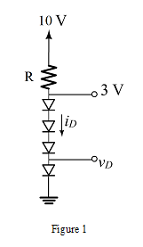
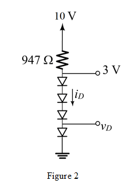

The diode current equation is ,
Substitute , ,  in the equation
in the equation
Consider the circuit diagram is shown in Figure 1.

The diode current equation is ,
Substitute , , in the equation
Consider the voltage across the string of diodes is 3 V.
The voltage across each diode is,
Now the current flowing through the diode is given by,
Substituting ,  and for in equation.
and for in equation.
Calculate the value of  .
.
Therefore the value of the resistance is
The required circuit is shown in Figure 2.
